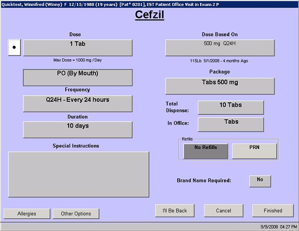

|
Description
When you order a new prescription medication or need to make changes to a prescription, the Prescription Medication Ordering screen appears for each drug ordered to allow you to select the package and dosage information and enter any special instructions needed.
On this screen select or enter the following for each medication:
- Package (You must select a package first)
- Dosage
- Frequency
- Duration
- Total items to dispense
- Number of refills allowed
- Special instructions (for the patient or pharmacist)
Depending on your configuration options, the prescription can print automatically when ordered or at the end of the encounter.
Documenting Current Medications
This screen also appears when the clinical staff documents current medications. This screen appears for each medication selected, however when the user is documenting a current medication rather than ordering a new prescription, none of the fields on this screen are required (not even the package).
How to Access This Screen
This screen can be accessed by:
- Selecting the Order Treatment(or Any Treatment) button, then Prescription Drug button on the resulting menu
- Selecting New Treatment on the Treatment List screen for any assessment, then selecting the Prescription Drug button on the resulting menu
- Selecting Add Med on the Current Medications screen, then selecting a specific prescription medication from the list
Screen Elements

Want to Learn More?
Related Solutions
Concept: Prescription Medications
Screen: Current Medications
How to: Order a Prescription Medication
How to: Order a Prescription Medication Using e-Prescribing
How to: Cancel a Prescription Medication
How to: Edit a Prescription
How to: Document a Current Medication
How to: Search for a Prescription Medication
|